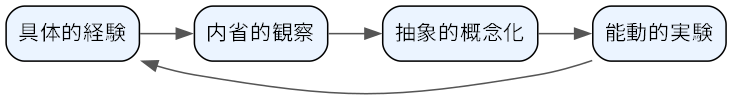

フィードバックと育成
この章で学ぶこと
フィードバックの目的と、行動を対象にする理由
SBI モデルを使ったフィードバックの組み立て方
承認と、改善を求めるフィードバックの伝え方
経験学習モデルと 70:20:10 の法則に基づく育成の考え方
コーチングとティーチングの使い分けと、育成計画の立て方
メンバーの成長は、チームの成果を長期的に高める最も確実な方法の 1 つである。そして、人が仕事の中で成長するには、自分の行動がどう受け止められ、どんな影響を与えているかを知る必要がある。ところが、多くのマネージャーはフィードバックを苦手としている。良い点はわざわざ言わず、悪い点は関係が悪くなるのを恐れて言わない。その結果、メンバーは自分が期待に応えているのか分からないまま働き、評価の時期になって初めて厳しい指摘を受けることになる。この章では、フィードバックの伝え方と、仕事を通じてメンバーを育てる考え方を説明する。
フィードバックの目的
フィードバックとは、相手の行動とその影響を伝え、望ましい行動を強化し、望ましくない行動の修正を促すことである。目的は相手の成長を助けることであり、相手を裁くことや、マネージャーの不満を発散することではない。
フィードバックでは、人格ではなく行動を対象にする。「あなたはいい加減だ」は人格への評価であり、言われた側は否定されたと感じ、反発するか落ち込むだけで、何を変えればよいかが分からない。「今週の報告書で、数値の出典が 3 か所抜けていた」は行動の記述であり、本人は次に何をすればよいかが分かる。行動は変えられるが、人格を変えるように求められても応えようがない。
フィードバックには、良い行動を認めて強化する承認（ポジティブフィードバック）と、行動の修正を求める改善のフィードバックがある。どちらも同じくらい大切である。
SBI モデル
フィードバックを組み立てる型として、米国の Center for Creative Leadership（CCL）が提唱した SBI モデルがよく使われる。SBI モデルでは、次の 3 つの要素で伝える。
S（Situation、状況）: いつ、どこで、どんな場面の話か。
B（Behavior、行動）: 相手が実際に何をしたか。観察できる事実を述べ、解釈や評価を混ぜない。
I（Impact、影響）: その行動が、周りの人、チーム、仕事の結果にどんな影響を与えたか。
状況を特定すると、相手はどの場面の話かすぐに分かる。行動を事実として述べると、議論が「そんなつもりはなかった」という意図の話にずれにくい。影響を伝えると、なぜその行動が大切なのかが伝わる。
種類 |
悪い例 |
良い例（SBI モデル） |
|---|---|---|
承認 |
「いつも頑張ってるね」 |
「昨日の顧客との定例会議で（S）、先方の質問に対してその場で過去の対応履歴を示してくれた（B）。おかげで先方の不安が解けて、その場で次の段階に進むことが決まった（I）」 |
改善 |
「会議での態度、もう少し何とかならない？」 |
「今朝の企画会議で（S）、A さんが説明している途中で 2 回話を遮っていた（B）。A さんはその後ほとんど発言しなくなって、A さんの案を十分に検討できなかった（I）」 |
改善 |
「最近、仕事が雑だよ」 |
「先週提出してもらった見積書で（S）、単価の計算が 2 か所間違っていた（B）。お客さまに出す前に私が気付いたが、そのまま出ていたら修正版の再提出が必要になっていた（I）」 |
悪い例は、どれも「いつ」「何が」があいまいで、相手は何を続け、何を変えればよいかが分からない。
承認の伝え方
承認は、うまくいった行動を本人に気付かせ、繰り返してもらうためのものである。日本の職場では「できて当たり前」として良い点を言葉にしないことが多いが、言われなければ、本人はどの行動が評価されたのか分からない。
具体的に伝える: 「ありがとう」「さすが」だけでなく、SBI モデルで何が良かったのかを伝える。
早く伝える: 行動から時間がたつほど効果が薄れる。気付いたらその日のうちに伝える。
結果だけでなく過程も認める: 結果が出なかった場合でも、工夫や粘り強さなど、良かった行動は認める。
人前で伝えるかは相手に合わせる: 人前でほめられるのを喜ぶ人もいれば、居心地悪く感じる人もいる。相手の好みが分からなければ、まずは個別に伝える。
お世辞にしない: 実態のない承認は見抜かれ、承認全体の信用が下がる。
改善を求めるフィードバックの伝え方
改善を求めるフィードバックは、伝える側にも受ける側にも負担がかかる。次の点に注意して準備する。
タイミング: 行動からできるだけ早く伝える。数か月前の出来事を評価面談でまとめて伝えるのは避ける。ただし、相手や自分が感情的になっているときは、少し落ち着いてからにする。
場所: 他の人がいない場所で、1 対 1 で伝える。人前での指摘は、相手の面子をつぶし、内容が伝わらなくなる。オンラインなら個別の通話にし、チャットの文字だけで済ませない。
事実ベース: SBI モデルで、観察した事実と影響を伝える。「みんなが言っている」のような伝聞や一般化は避ける。
相手の考えを聞く: 伝えた後、「この件について、あなたはどう見ている？」と聞く。マネージャーが知らない事情があることも多い。一方的に話して終わりにしない。
次の行動を合意する: 最後に、次に何をするかを一緒に決める。「次の会議では、相手の説明が終わってから質問する」のように、具体的な行動にする。合意したことは、後日の 1on1 で振り返る（コミュニケーション）。
改善のフィードバックを承認で挟む、いわゆる「サンドイッチ型」の伝え方は、本当に伝えたいことがぼやけやすい。承認は承認として、改善は改善として、それぞれ普段から別々に伝えるほうが誤解が少ない。
何度伝えても改善しない場合や、問題が業務に重大な影響を与えている場合は、個別のフィードバックの範囲を超える。その場合の対応は難しい場面への対応を参照する。
率直さと思いやり
スコットは、上司のフィードバックを「相手を個人として大切に思うこと」と「率直に指摘すること」の 2 つの軸で整理し、両方がそろった状態を Radical Candor（徹底した率直さ）と呼んだ[Scott2019]。
思いやりがあり率直さもある: 相手の成長のために、言いにくいことも伝える。目指すべき状態である。
率直さはあるが思いやりがない: 指摘は正しくても、攻撃的に受け取られ、相手は防御的になる。
思いやりはあるが率直さがない: 嫌われたくない、傷つけたくないと考えて指摘を控える。相手は問題に気付かないまま、後で大きな不利益を受ける。
どちらもない: 本人には何も言わず、陰で不満を言う。最も避けるべき状態である。
経験の浅いマネージャーが陥りやすいのは、3 つ目の「思いやりはあるが率直さがない」状態である。指摘しないことは、一見優しいようで、実際には相手の成長の機会を奪っている。率直に伝えることと、相手を大切に思うことは両立する。
フィードバックを受ける側としてのマネージャー
マネージャー自身も、メンバーからのフィードバックを必要としている。ところが、立場が上がるほど、周りは率直に指摘してくれなくなる。スコットは、フィードバックを与える前に、まず自分が求めることから始めるよう勧めている[Scott2019]。
1on1 で「私のやり方で変えてほしいことはある？」と定期的に聞く。最初は「特にありません」と返ってくることが多いが、沈黙を恐れずに待つ。
指摘を受けたら、反論や言い訳をせず、まず「言ってくれてありがとう」と伝える。
受けた指摘に対して実際に行動を変え、変えたことを伝える。これにより、次の指摘が出やすくなる。
マネージャーがフィードバックを受け入れる姿を見せることは、チームの中でフィードバックが当たり前に交わされる文化をつくる第一歩になる。
育成の考え方
経験学習モデル
人は主に経験から学ぶ。コルブの経験学習モデルは、経験から学ぶ過程を次の 4 つの段階のサイクルとして表した[Kolb1984]（図 9）。

図 9 経験学習モデルのサイクル
具体的経験: 実際に仕事をする。
内省的観察: 何が起きたか、なぜそうなったかを振り返る。
抽象的概念化: 振り返りから、次にも使える教訓や考え方を引き出す。
能動的実験: 教訓を次の仕事で試す。それが新しい経験になる。
経験をしただけでは、学びにつながるとは限らない。忙しい職場では、仕事が終わるとすぐ次の仕事に移り、振り返りが抜けがちである。マネージャーは 1on1 やプロジェクトの振り返りで「今回の仕事で何を学んだ？」「次に同じ状況になったらどうする？」と問いかけ、経験を学びに変える手助けをする。
70:20:10 の法則
70:20:10 の法則は、ロンバルドとアイヒンガーがキャリア開発の文献で示した考え方で、人の成長に影響を与えるものの割合を、仕事上の経験が 70%、他者からの助言やフィードバックが 20%、研修や読書などの学習が 10% とする[Lombardo1996]。この数字は厳密な測定値ではなく、目安として理解するのがよい。それでも、「研修に送れば人が育つ」わけではなく、成長の中心は仕事そのものにあるという点は、育成を考えるうえで重要な示唆である。
仕事のアサインで育てる
成長の中心が仕事上の経験にあるなら、マネージャーの最も強力な育成の手段は、誰にどの仕事を割り当てるかである。
今の力で確実にこなせる仕事だけを渡していると、成長は止まる。少し背伸びが必要な仕事を意識的に割り当てる。
背伸びの度合いが大きすぎると、失敗して自信を失う。難しさに応じて、相談の頻度や支援の厚さを調整する（仕事を任せる）。
本人の育成計画と結び付けて、「この仕事であなたに身に付けてほしいのは○○」と、アサインの意図を伝える。
仕事の後に振り返りの機会を設け、経験学習のサイクルを回す。
コーチングとティーチングの使い分け
育成の関わり方には、答えややり方を教えるティーチングと、問いかけによって本人が自分で答えを見つけるのを支援するコーチングがある。どちらが優れているということはなく、相手と状況によって使い分ける。
観点 |
ティーチング |
コーチング |
|---|---|---|
関わり方 |
知識、手順、答えを教える |
問いかけて、本人の考えを引き出す |
向いている相手 |
その仕事の経験が浅い人、新しく加わった人 |
経験と知識があり、自分で考えられる人 |
向いている場面 |
正解や決まった手順がある、急ぎで対応が必要、失敗の影響が大きい |
正解が 1 つでない、本人の主体性を育てたい、時間に余裕がある |
利点 |
早く確実に伝わる |
本人が納得して動ける、考える力が育つ |
注意点 |
続けると指示待ちになりやすい |
知識がない相手に問い続けると、相手を追い詰める |
経験の浅いメンバーにコーチングだけで関わると、相手は答えようのない質問を受け続けることになる。逆に、経験のあるメンバーに細かく教え続けると、マイクロマネジメントと受け取られる。同じメンバーでも、慣れた仕事ではコーチング、初めての仕事ではティーチングと、仕事ごとに切り替える。
育成計画
育成は、場当たり的な助言の積み重ねではなく、本人と合意した計画に沿って進めるのがよい。
本人のキャリアの希望を聞く: 1on1 で「どんな仕事をしていきたいか」「将来どうなりたいか」を聞く。明確な答えがないメンバーも多いので、「今の仕事で楽しいのはどんなとき？」のように身近な問いから始める。
強みと伸ばしたい点を整理する: 本人の自己認識と、マネージャーから見た強み・課題をすり合わせる。
目標を決める: 半年〜1 年程度で身に付けたいことを、具体的な行動や成果で表す（目標の立て方は目的と目標を定めるを参照）。
支援を決める: 目標に向けて、どんな仕事をアサインするか、誰に助言をもらうか、どんな学習をするかを決める。70:20:10 の考え方に沿い、仕事のアサインを中心に組み立てる。
定期的に振り返る: 1on1 で進み具合を確認し、必要に応じて計画を見直す。
キャリアの希望は、会社の都合ですべてかなえられるわけではない。かなえられないことを約束しないよう注意しつつ、今の仕事の中で希望に近づける機会を一緒に探す。
エンジニアのチームでは
コードレビューをフィードバックの場として使うときの注意: コードレビュー（他のメンバーが書いたプログラムを読み、問題点や改善案を指摘する活動）は、技術的なフィードバックを日常的に交わせる貴重な場である。一方で、文字だけのやり取りになるため、指摘がきつく受け取られやすい。指摘はコードに向け、書いた人に向けない。必須の修正と好みの提案を区別して書く（例: 「必須」「提案」などの印を付ける）。良い書き方には承認のコメントを残す。レビューのコメントで済まない行動面の話（締め切りの守り方、他のメンバーへの態度など）は、レビューの場ではなく 1on1 で伝える。
技術的な成長: 技術の進歩は速く、エンジニアは学び続ける必要がある。新しい技術を試す仕事、設計の主担当、障害対応のリードなど、成長につながる仕事のアサインを意識する。社外の勉強会への参加や技術書の購入を支援する制度があれば、積極的に活用を勧める。
キャリアパス（専門職とマネジメント職）: エンジニアのキャリアには、技術を深める専門職の道と、人と組織を率いるマネジメント職の道がある。会社によっては、専門職でもマネジメント職と同等に昇進できる制度（デュアルラダーなどと呼ばれる）を設けている。マネジメント職に就くことだけが成長ではないと伝え、本人の志向に合った道を一緒に考える。フォルニエは、エンジニアがメンターからテックリード、マネージャーへと進む各段階で求められることを具体的に描いている[Fournier2018]。テックリードとマネージャーの役割分担についてはマネジメントとはも参照する。
よくある失敗
よくある失敗 |
対策 |
|---|---|
「ちゃんとして」など、あいまいな言葉で指摘する |
SBI モデルで、状況・行動・影響を具体的に伝える。 |
人格や性格を批判する |
観察できる行動を対象にする。 |
改善点を評価面談までため込む |
気付いたら早めに、1 対 1 の場で伝える。 |
関係が悪くなるのを恐れて指摘しない |
指摘しないことは成長の機会を奪うと理解し、思いやりを持って率直に伝える。 |
一方的に伝えて終わる |
相手の考えを聞き、次の行動を合意する。 |
良い点を言葉にしない |
良い行動に気付いたら、その日のうちに具体的に承認する。 |
育成を研修任せにする |
成長につながる仕事をアサインし、振り返りの場を設ける。 |
経験の浅いメンバーに問いかけばかりする |
相手と仕事に応じて、ティーチングとコーチングを使い分ける。 |
メンバーのキャリアの希望を聞いたことがない |
1on1 でキャリアの希望を聞き、育成計画に反映する。 |
チェックリスト
この 2 週間で、メンバー全員に少なくとも 1 回、具体的な承認を伝えたか。
フィードバックを、状況・行動・影響に分けて伝えているか。
改善を求めるフィードバックを、1 対 1 の場で、早めに伝えているか。
フィードバックの後に、相手の考えを聞き、次の行動を合意しているか。
自分のやり方について、メンバーからフィードバックを求めているか。
各メンバーに、少し背伸びが必要な仕事を割り当てているか。
仕事の後に、振り返りの機会を設けているか。
相手と仕事に応じて、ティーチングとコーチングを使い分けているか。
各メンバーのキャリアの希望を把握しているか。
各メンバーと、育成の目標と支援内容を合意しているか。
まとめ
フィードバックの目的は相手の成長を助けることであり、人格ではなく行動を対象にする。
SBI モデルで状況・行動・影響を具体的に伝え、承認も改善も早めに伝える。
思いやりと率直さは両立する。指摘しないことは優しさではない。
人は主に仕事の経験から育つ。仕事のアサインと振り返りを育成の中心に置き、ティーチングとコーチングを使い分ける。
本人のキャリアの希望を聞き、目標と支援を合意した育成計画をつくる。